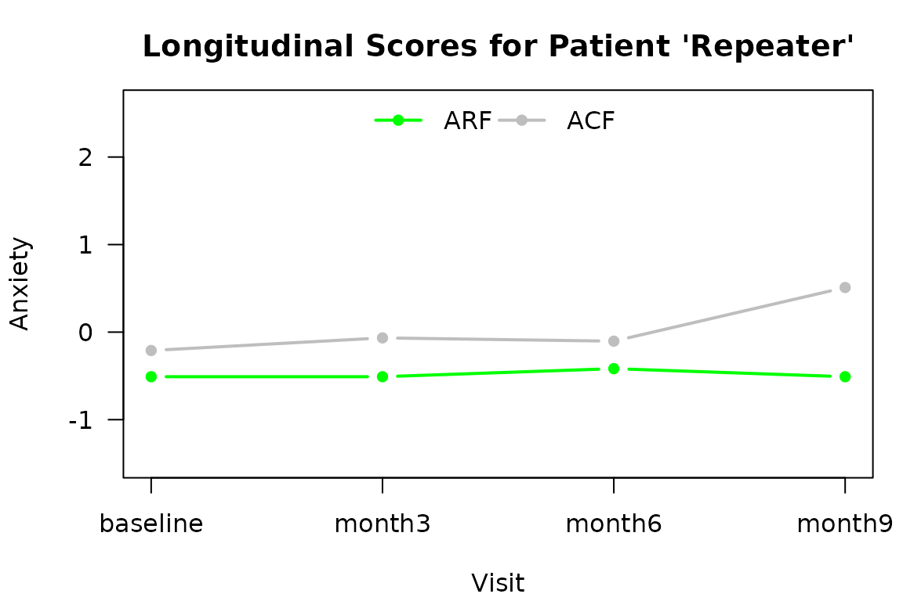

The Michigan Vision-related Anxiety Questionnaire
The MVAQ (https://www.ncbi.nlm.nih.gov/pmc/articles/PMC8184579/) is a 14-item questionnaire to assess anxiety related to visual function among patients with inherited retinal degeneration. A patient’s responses are used to quantify visual function in 2 domains:
- Anxiety Related to Rod Function (ARF) and
- Anxiety Related to Cone Function (ACF).
The MVAQ itself is copyrighted material of the University of
Michigan. All rights reserved. For licensing information, contact the
University of Michigan Technology Transfer Office at
techtransfer@umich.edu. This scoring software is openly
available.
Scoring the MVAQ
A graded response model (GRM) was built from 128 original patients at
the University of Michigan. The R package mirt was used to fit the GRM
and can be used to score responses from new patients. The R package
scoreMVAQ contains the (deidentified) mirt model objects and a wrapper
function scoreMVAQ() that uses 14 responses to generate 2
domain scores (and standard errors).
Installation
The scoreMVAQ package is available from GitHub. An easy way to install scoreMVAQ is
# install.packages("devtools")
# devtools::install_github("ChrisAndrewsPhd/scoreMVAQ")Installation is required the first time scoreMVAQ is used on a machine, after a major version change of R (e.g. 4.2.1 to 4.3.0), or to obtain the most recent version of the package.
Examples from Package
The scoreMVAQ package has a few simple examples in the helpfile for
scoreMVAQ()
library(scoreMVAQ)
# ?scoreMVAQ # open help file
example(scoreMVAQ) # run examples in help file
#>
#> scMVAQ> justme <- read.table(
#> scMVAQ+ text = "Me,0,0,0,0,0,0,0,0,1,1,1,0,0,1",
#> scMVAQ+ sep = ",")
#>
#> scMVAQ> scoreMVAQ(justme)
#> $thetas
#> ID ARF ACF
#> 1 Me -0.1694411 -0.8727335
#>
#> $ses
#> ID ARF ACF
#> 1 Me 0.1146743 0.494362
#>
#>
#> scMVAQ> justyou <- data.frame(ID="You", matrix(nrow=1, sample(0:3, 14, TRUE)))
#>
#> scMVAQ> scoreMVAQ(justyou)
#> $thetas
#> ID ARF ACF
#> 1 You 0.1418186 0.3481403
#>
#> $ses
#> ID ARF ACF
#> 1 You 0.1360266 0.2838339
#>
#>
#> scMVAQ> names(justme) <- names(justyou) <- c("ID", sprintf("Q%0.2d", seq(14)))
#>
#> scMVAQ> justus <- rbind(justme, justyou)
#>
#> scMVAQ> scoreMVAQ(justus, verbose = 1)
#> i = 1
#> i = 2
#> $thetas
#> ID ARF ACF
#> 1 Me -0.1694411 -0.8727335
#> 2 You 0.1418186 0.3481403
#>
#> $ses
#> ID ARF ACF
#> 1 Me 0.1146743 0.4943620
#> 2 You 0.1360266 0.2838339A Typical Use Case
The responses of an administration of the MVAQ should be stored in a
single row of a dataset. For example, in a cross-sectional study, each
patient has one row and 14 of the columns are the responses to the 14
items. In a longitudinal study, each patient visit has a row and 14 of
the columns are the responses. If the only columns in the data.frame are
an identifier and the 14 responses in order, then the function
scoreMVAQ() can be used with the dataset directly. However,
it is often the case that the data.frame contains additional columns
that should not be passed to scoreMVAQ(), such as
VisitNumber, Sex, ExamDate, ….
Data Preparation
Read the data from a file and create a data.frame with 15 columns.
The first column is not used. It is carried along.
scoreMVAQ() does not reorder the rows. A generic approach
could just use, e.g., seq(nrow(patientresponses)). In this example, The
PatID and VisitID variables are pasted to create the identifier
patientresponses <- read.csv(
system.file("extdata/sampleMVAQ.csv", package = "scoreMVAQ", mustWork = TRUE))
dim(patientresponses) # has 61 columns (need 60)
#> [1] 11 16
patientresponses # Columns for PatID and VisitID
#> PatID VisitID MVAQ01 MVAQ02 MVAQ03 MVAQ04 MVAQ05 MVAQ06 MVAQ07 MVAQ08
#> 1 Best baseline 0 0 0 0 0 0 0 0
#> 2 One baseline 1 1 1 1 1 1 1 1
#> 3 Two baseline 2 2 2 2 2 2 2 2
#> 4 Worst baseline 3 3 3 3 3 3 3 3
#> 5 Miss baseline 4 4 4 4 4 4 4 4
#> 6 Repeater baseline 0 0 0 1 0 1 0 0
#> 7 Repeater month3 0 0 0 1 0 1 0 0
#> 8 Repeater month6 0 1 0 1 0 0 1 0
#> 9 Repeater month9 2 2 1 1 0 1 0 0
#> 10 Han baseline 0 1 0 1 1 1 1 0
#> 11 Solo baseline 0 NA 0 0 0 0 1 0
#> MVAQ09 MVAQ10 MVAQ11 MVAQ12 MVAQ13 MVAQ14
#> 1 0 0 0 0 0 0
#> 2 1 1 1 1 1 1
#> 3 2 2 2 2 2 2
#> 4 3 3 3 3 3 3
#> 5 4 4 4 4 4 4
#> 6 0 0 1 0 0 0
#> 7 0 0 1 0 0 1
#> 8 0 0 1 0 0 1
#> 9 0 0 1 0 0 1
#> 10 2 0 1 0 0 0
#> 11 1 1 0 0 0 0
dat_for_MVAQ <- data.frame(
ID_Visit = paste(
patientresponses$PatID,
patientresponses$VisitID,
sep = "|"),
patientresponses[, seq(from = 3, by = 1, length = 14)])
dim(dat_for_MVAQ)
#> [1] 11 15
dat_for_MVAQ
#> ID_Visit MVAQ01 MVAQ02 MVAQ03 MVAQ04 MVAQ05 MVAQ06 MVAQ07 MVAQ08
#> 1 Best|baseline 0 0 0 0 0 0 0 0
#> 2 One|baseline 1 1 1 1 1 1 1 1
#> 3 Two|baseline 2 2 2 2 2 2 2 2
#> 4 Worst|baseline 3 3 3 3 3 3 3 3
#> 5 Miss|baseline 4 4 4 4 4 4 4 4
#> 6 Repeater|baseline 0 0 0 1 0 1 0 0
#> 7 Repeater|month3 0 0 0 1 0 1 0 0
#> 8 Repeater|month6 0 1 0 1 0 0 1 0
#> 9 Repeater|month9 2 2 1 1 0 1 0 0
#> 10 Han|baseline 0 1 0 1 1 1 1 0
#> 11 Solo|baseline 0 NA 0 0 0 0 1 0
#> MVAQ09 MVAQ10 MVAQ11 MVAQ12 MVAQ13 MVAQ14
#> 1 0 0 0 0 0 0
#> 2 1 1 1 1 1 1
#> 3 2 2 2 2 2 2
#> 4 3 3 3 3 3 3
#> 5 4 4 4 4 4 4
#> 6 0 0 1 0 0 0
#> 7 0 0 1 0 0 1
#> 8 0 0 1 0 0 1
#> 9 0 0 1 0 0 1
#> 10 2 0 1 0 0 0
#> 11 1 1 0 0 0 0Scoring
The function scoreMVAQ() returns a list with 2 elements.
Each element is a data.frame with 3 columns: ID and the 2 domain scores.
Each data.frame has the same number of rows as the input.
MVAQlist <- scoreMVAQ::scoreMVAQ(dat_for_MVAQ, verbose = 0)
str(MVAQlist) # list with 2 elements
#> List of 2
#> $ thetas:'data.frame': 11 obs. of 3 variables:
#> ..$ ID : chr [1:11] "Best|baseline" "One|baseline" "Two|baseline" "Worst|baseline" ...
#> ..$ ARF: num [1:11] -1.19709 -0.00296 0.44207 1.63048 NA ...
#> ..$ ACF: num [1:11] -1.327 0.593 1.275 2.623 NA ...
#> $ ses :'data.frame': 11 obs. of 3 variables:
#> ..$ ID : chr [1:11] "Best|baseline" "One|baseline" "Two|baseline" "Worst|baseline" ...
#> ..$ ARF: num [1:11] 0.535 0.111 0.109 0.486 NA ...
#> ..$ ACF: num [1:11] 0.614 0.242 0.227 0.475 NA ...
MVAQthetas <- MVAQlist[["thetas"]] # domain estimates
MVAQses <- MVAQlist[["ses"]] # standard error estimatesWrap up
The scoreMVAQ() output can be saved as an R object,
written to an external file, used to create summary data, plotted, …
patientthetas <- data.frame(patientresponses, MVAQthetas[, -1])
patientthetas
#> PatID VisitID MVAQ01 MVAQ02 MVAQ03 MVAQ04 MVAQ05 MVAQ06 MVAQ07 MVAQ08
#> 1 Best baseline 0 0 0 0 0 0 0 0
#> 2 One baseline 1 1 1 1 1 1 1 1
#> 3 Two baseline 2 2 2 2 2 2 2 2
#> 4 Worst baseline 3 3 3 3 3 3 3 3
#> 5 Miss baseline 4 4 4 4 4 4 4 4
#> 6 Repeater baseline 0 0 0 1 0 1 0 0
#> 7 Repeater month3 0 0 0 1 0 1 0 0
#> 8 Repeater month6 0 1 0 1 0 0 1 0
#> 9 Repeater month9 2 2 1 1 0 1 0 0
#> 10 Han baseline 0 1 0 1 1 1 1 0
#> 11 Solo baseline 0 NA 0 0 0 0 1 0
#> MVAQ09 MVAQ10 MVAQ11 MVAQ12 MVAQ13 MVAQ14 ARF ACF
#> 1 0 0 0 0 0 0 -1.197091367 -1.32692105
#> 2 1 1 1 1 1 1 -0.002964849 0.59326736
#> 3 2 2 2 2 2 2 0.442071740 1.27527715
#> 4 3 3 3 3 3 3 1.630478712 2.62299486
#> 5 4 4 4 4 4 4 NA NA
#> 6 0 0 1 0 0 0 -0.509698654 -0.20997665
#> 7 0 0 1 0 0 1 -0.509698654 -0.06599024
#> 8 0 0 1 0 0 1 -0.418444246 -0.10339904
#> 9 0 0 1 0 0 1 -0.509698654 0.50977036
#> 10 2 0 1 0 0 0 -0.206429988 0.09479660
#> 11 1 1 0 0 0 0 -0.214407741 -1.16805918
# save(
# MVAQlist, dat_for_MVAQ, patientthetas,
# file = "./example.RData")
#
# write.csv(
# MVAQthetas,
# file = "./examplethetas.csv",
# row.names = FALSE, na = "")
library(knitr)
library(kableExtra)
kableExtra::kable_styling(
knitr::kable(
sapply(
subset(
patientthetas,
subset = VisitID == "baseline",
select = names(MVAQthetas[, -1])),
quantile, na.rm = TRUE),
digits = 2,
caption = "Summary of Baseline ARF and ACF"),
full_width = FALSE)| ARF | ACF | |
|---|---|---|
| 0% | -1.20 | -1.33 |
| 25% | -0.36 | -0.69 |
| 50% | -0.21 | 0.09 |
| 75% | 0.22 | 0.93 |
| 100% | 1.63 | 2.62 |
repeater <- subset(
patientthetas,
subset = PatID == "Repeater",
select = c("VisitID", "ARF", "ACF"))
par(mar = c(4.1, 4.1, 3, 1), las = 1)
matplot(
repeater[, c("ARF", "ACF")],
type = "b", pch = 16, lty = 1, lwd = 2, col = c("green", "grey"),
ylab = "Anxiety", ylim = c(-1.5, 2.6),
xlab = "Visit", xaxt = "n",
main = "Longitudinal Scores for Patient 'Repeater'")
axis(
side = 1,
at = seq(nrow(repeater)),
labels = repeater$VisitID)
legend(
"top", bty = "n", col = c("green", "grey"), lwd = 2, pch = 16,
legend = c("ARF", "ACF"), ncol = 2)